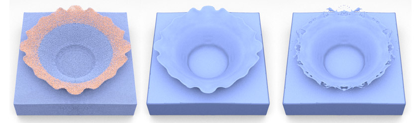
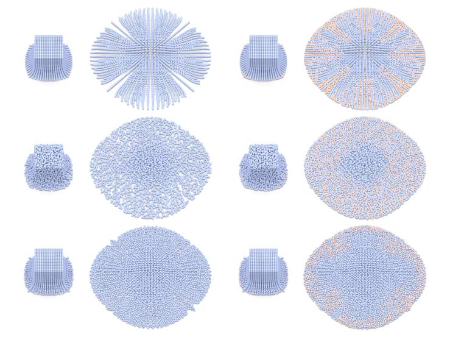
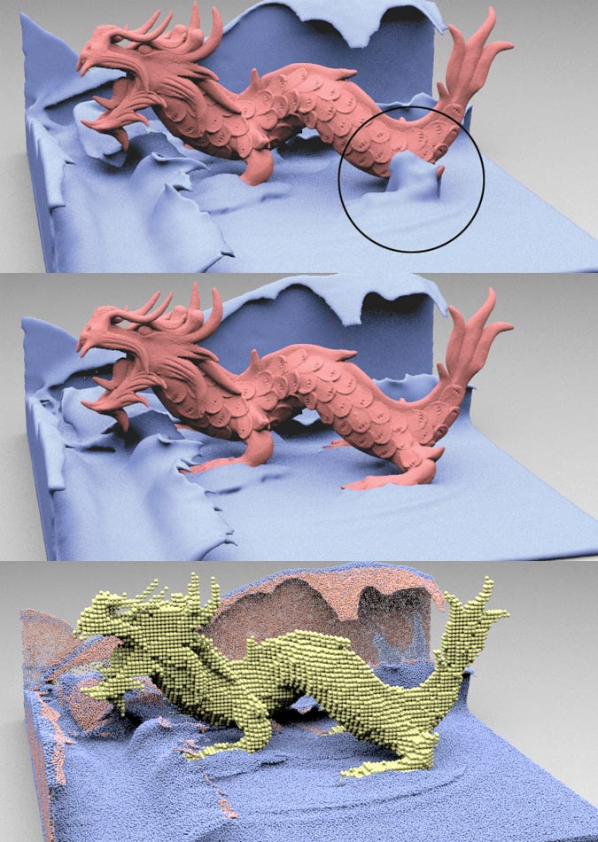
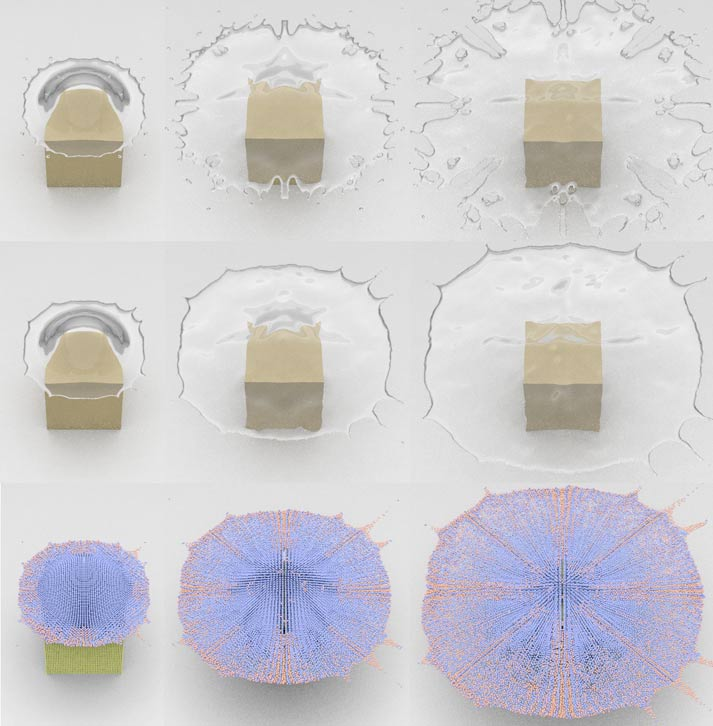
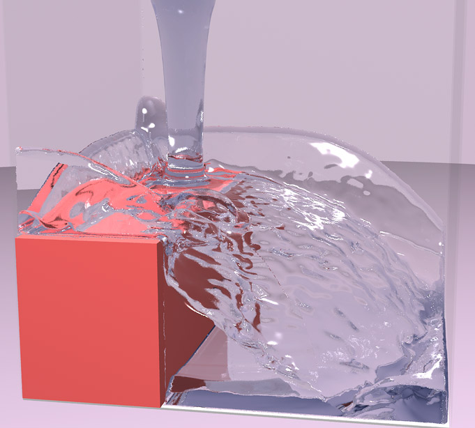
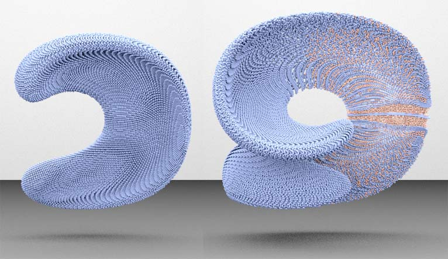
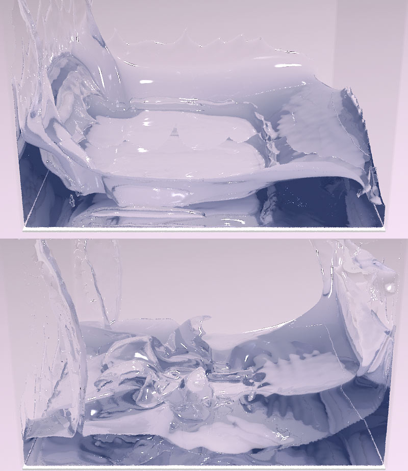

Ryoichi Ando and Reiji Tsuruno

Water splash by our method. From left to right: A visualized splash with particles. A thin surface generated by anisotropic kernels. Our method without particle insertion at the same timing. Click here for the large image.
We present a new particle-based method that explicitly preserves thin fluid sheets for animating liquids. Our primary contribution is a meshless particle-based framework that splits at thin points and collapses at dense points to prevent the breakup of liquid. In contrast to existing surface tracking methods, the proposed framework does not suffer from numerical diffusion or tangles, and robustly handles topology changes by the meshless representation. As the underlying fluid model, we use Fluid-Implicit-Particle (FLIP) with weak spring forces to generate smooth particle-based liquid animation that maintains an even spatial particle distribution in the presence of eddying or inertial motions. The thin features are detected by examining stretches of distributions of neighboring particles by performing Principle Component Analysis (PCA), which is used to reconstruct thin surfaces with anisotropic kernels. Our algorithm is intuitively implemented, easy to parallelize and capable of producing visually complex thin liquid animations.
Paper (PDF)
Ryoichi Ando and Reiji Tsuruno. A Particle-based Method for Preserving Fluid Sheets.
In Proceedings of ACM SIGGRAPH / EUROGRAPHICS Symposium on Computer Animation (SCA), 2011.
Bibtex (Text)
A bibtex format file for the latex processor.
Presentation Slides
PDF file.
Movie (MP4)
Several sequences of liquid animation produced by using our method. (100 MB)
Two-dimensional dam break. Left: Our FLIP-based liquid simulator with weak spring forces. Right: The PIC/FLIP method. Notice that the spatial particle distribution is almost uniform in our image while the PIC/FLIP image is uneven.

Effect of our weak spring force. From top to bottom rows: uniformly placed PIC/FLIP, jittered placed PIC/FLIP, uniformly placed PIC/FLIP with the spring force. Left two columns: without particle split. Right two columns: with particle split. Click here for the large image.

Liquid stuck to an obstacle. From top to bottom: The liquid sheet remains stuck to the dragon model. The sheet was removed by repositioning the stuck particles into the deep water. A visualization of particles.

Water drop on cubic tower. Top row: Our liquid solver only. Middle row: Our liquid solver with the sheet preserving algorithm. Bottom row: Visualization with the particles. The pink points indicate split particles. Click here for the large image.

Water pouring off a box cliff. Poured water jumps off the cliff edge, maintaining a continuous fluid sheet and then landing on the pool. Click here for the large image.

Enright deformation test. Our particle-based method can tolerate the thin features of Enright’s strong deformation by particles that split at the breaking points (shown in pink) and collapse at the dense points.

Dam breaking test with our particle-based thin sheet preserving algorithm.